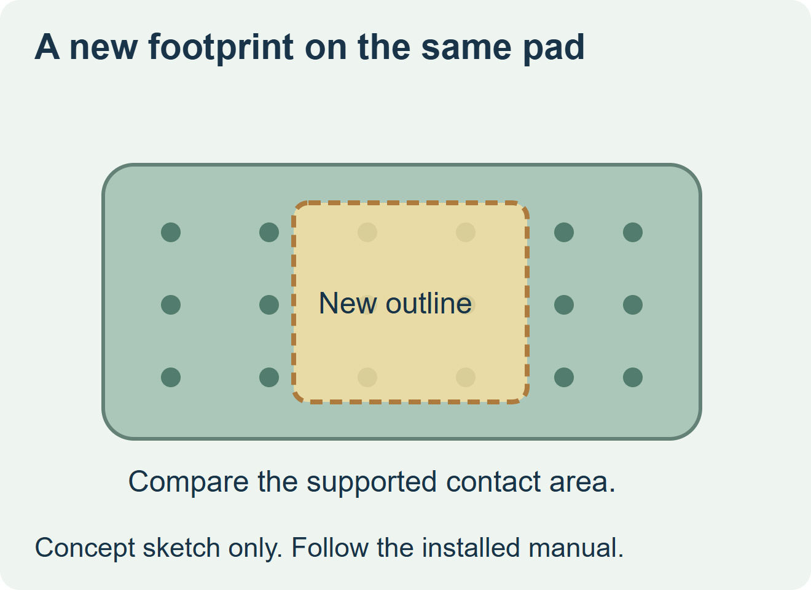
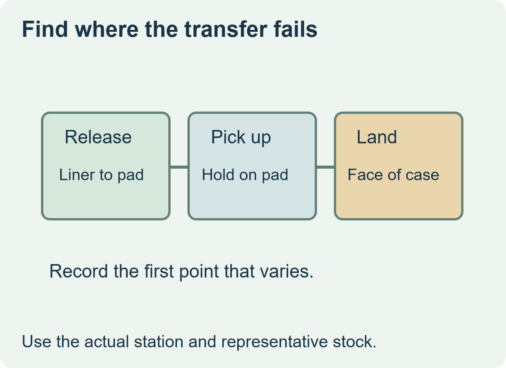

Keep the installed tamp pad only if the equipment owner confirms that it supports the proposed label and the trial shows repeatable transfer. If the new label is smaller, larger or shaped differently, compare its supported contact area and feed position with the actual pad before buying production rolls. Ask about a compatible pad or a label layout within the supported footprint when the existing arrangement is uncertain.


Put the label on two drawings
On the transfer drawing, mark the label shape, feed direction and the position in which it reaches the pad. On the case drawing, mark the final footprint, flaps, seam and any unsupported surface. Videojet’s P3400 manual describes a vacuum pad that holds a label and notes that pad details depend on label size and product style. This is a model-specific example. Use the installed module’s instructions to verify the approved configuration. Videojet P3400 operator manual
| Observation on the trial | Question to resolve | Purchase decision |
|---|---|---|
| Label feeds and sits consistently on the pad, then lands correctly | Does the supported setup cover the intended speed and case range? | Release the named label and pad combination after acceptance. |
| Label reaches the pad shifted or drops before application | Is feed or pad contact the limiting step? | Hold the print order while the equipment owner checks the supported transfer. |
| Label stays on the pad until transfer but lands on a seam or step | Is the case presentation or the chosen label landing responsible? | Adjust the approved landing or revise the label footprint and recheck transfer. |


Try the physical label before approving the dimensions
Use a representative roll with the planned cut, face, liner and leading edge. Ask the line team to observe where the label first separates, how it is presented on the pad, and where it lands on the packed case. Check bond and readability after handling as separate outcomes. If a sample behaves differently from production stock, record which construction changed before using the result to place the order.
Discuss the unresolved label requirement
Send the current and proposed label drawings, installed module and pad reference, case photos or drawings, web and leading edge, intended line speed and requested order quantity. Review food label options and prepare a label specification inquiry. The contact page opens an email draft and lists email or WhatsApp for attachments. Supply, proof options, testing, pricing and timing require project confirmation.